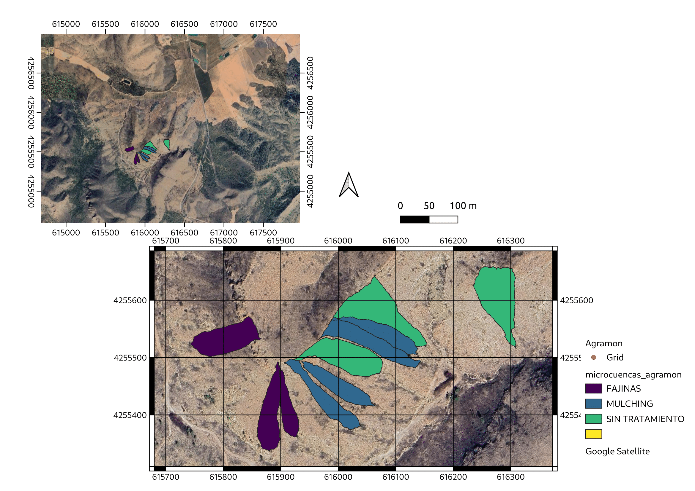

Pilot Sites
Agramon (2019)
Credit: Gustavo A. Mesias Ruiz (ICA-CSIC)
Immediately after the fire, various post-fire management strategies were implemented in September and October 2012 by forest managers of the regional government. These included hillslope stabilization techniques such as Log Erosion Barriers (LEBs) and Contour-Felled Logs (CFD).

Contents